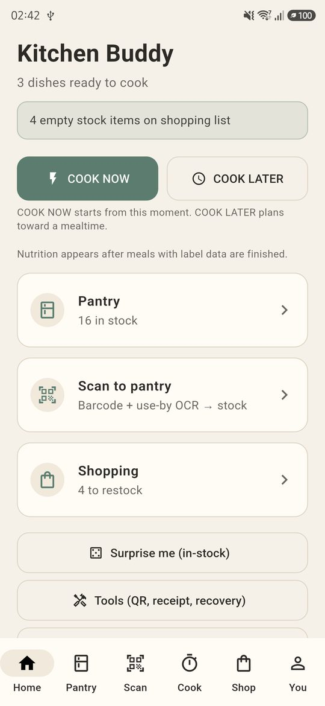
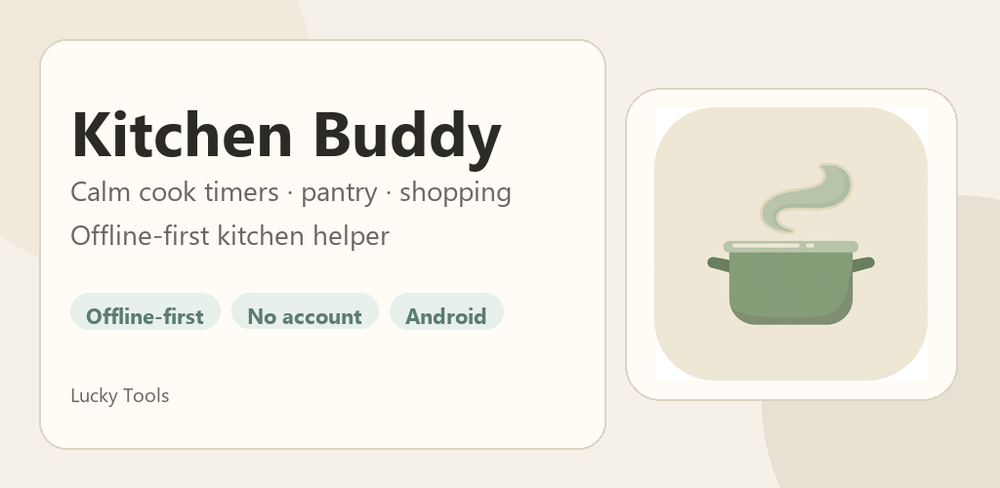
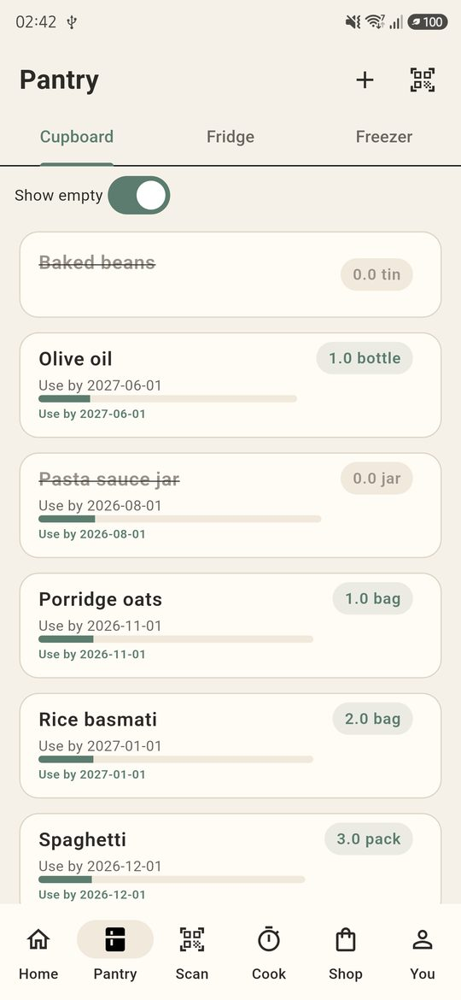
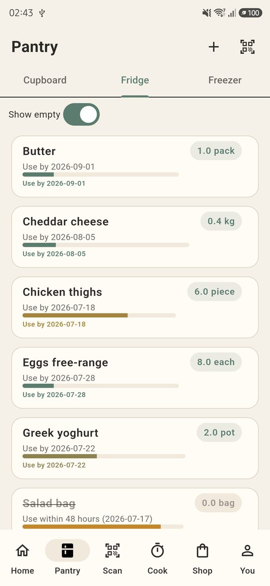
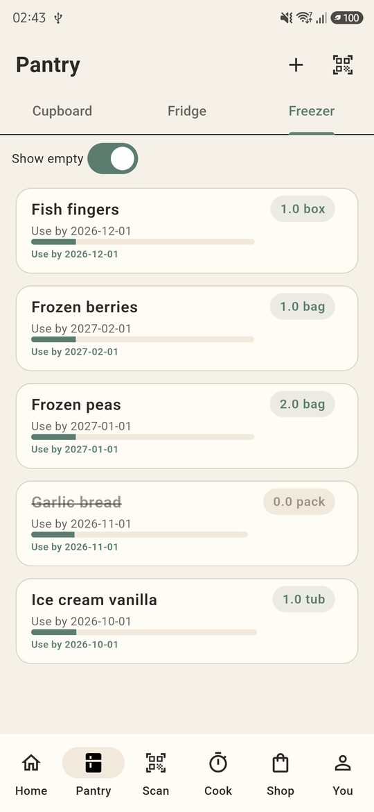
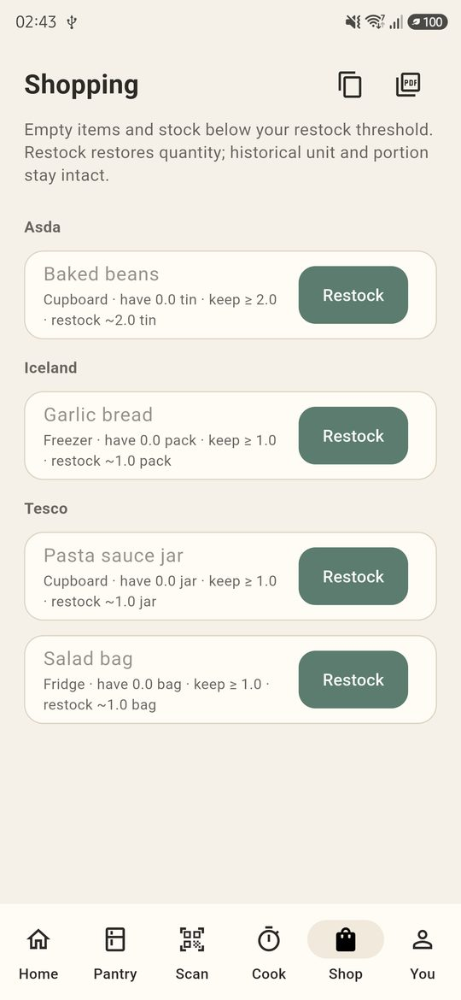
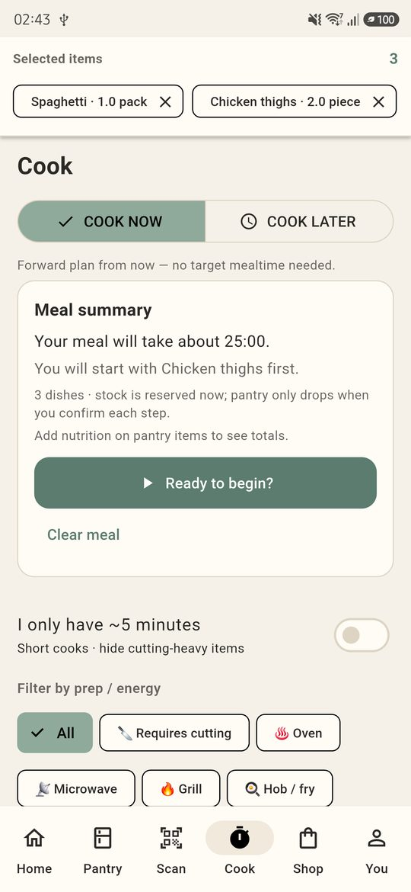

Your calm kitchen buddy
Stock the pantry, scan products, run multi-dish timers, and keep a shopping list — without the noise. Kitchen data stays on your phone. Optional online product lookup only when you allow it.
Offline-first
No account required
Android
Lucky Tools

Inside the app
Cupboard, fridge, freezer, shopping and cook — real screens





Built for low-stress cooking
On your phone
Pantry, timers, diary, allergens, and shopping lists are stored locally. We don’t run a Kitchen Buddy cloud account for your stock.
Optional network
If you turn on online product lookup, only a barcode number may be sent to public food databases (e.g. Open Food Facts) to fill product details.
Camera & OCR
Camera is used for barcodes, use-by dates, and optional receipt text — processed on-device. Frames are not uploaded for storage by Kitchen Buddy.
Free & Calm Deluxe
Cooking, pantry, and timers stay free. Optional ads on free tier. Remove ads alone, or Calm Deluxe for ad-free + unlimited online lookups via Google Play.
Google Play package
Application ID: com.luckytools.synccook
Publisher: Lucky Tools
Contact:
autoaccentsni@gmail.com